SP0 – Mission 3 : Mise en place d’un serveur de gestion d’incidents (GLPIEPOKA)¶

Présenté par : Joris Texier
Contexte : EPOKA
Version : 1
Date de rédaction : 08 septembre 2025
Sommaire¶
- Outil de gestion d’incidents
- Installation de Debian 12
- Préparer le serveur pour installer GLPI
- Installer le socle LAMP
- Préparer une base de données pour GLPI
- Télécharger GLPI et préparer son installation
- Préparer la configuration Apache2
- Utilisation de PHP8.2-FPM avec Apache2
- Installation de GLPI
- Création des 2 agents sur GLPI
- Création d’une VM Windows pour les agents
- Automatisation de l’inventaire
Outil de gestion d’incidents¶
Outils possibles : GLPI, OTRS, Request Tracker, Zendesk, Freshservice.
En analysant nos besoins (fonctionnalités, facilité d'installation, documentation, communauté), nous avons choisi GLPI.
Installation de Debian 12¶
- Cloner sur le serveur Nutanix une machine virtuelle Debian 12 déjà existante.
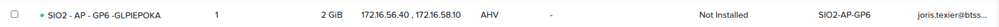
- Démarrer la machine virtuelle.
-
Connexion :
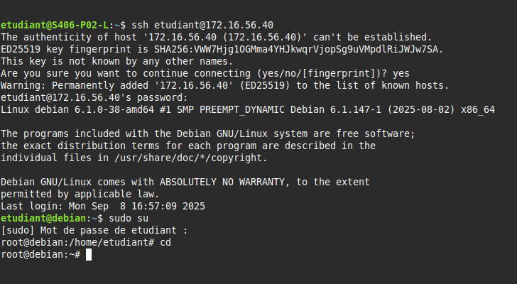login : etudiant mot de passe : etudiant_007 -
Vérifier la configuration réseau :
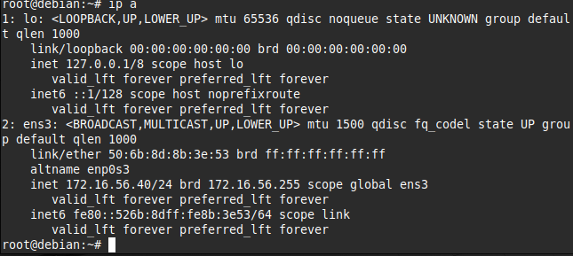ip addr
Préparer le serveur pour installer GLPI¶
Mettre à jour les paquets et configurer l’adresse IP :
sudo apt-get update && sudo apt-get upgrade
Installer le socle LAMP¶
Installer Apache2, MariaDB et PHP :
sudo apt-get install apache2 php mariadb-server
Installer les extensions PHP nécessaires :
sudo apt-get install php-xml php-common php-json php-mysql php-mbstring php-curl php-gd php-intl php-zip php-bz2 php-imap php-apcu
Si vous souhaitez intégrer un LDAP :
sudo apt-get install php-ldap
Préparer une base de données pour GLPI¶
Sécuriser MariaDB :
sudo mysql_secure_installation
Créer la base de données :
sudo mysql -u root -p
Puis dans le prompt MariaDB :
CREATE DATABASE db_GLPIEPOKA;
CREATE USER 'glpi_admin'@'localhost' IDENTIFIED BY 'etudiant_007';
GRANT ALL PRIVILEGES ON db_GLPIEPOKA.* TO 'glpi_admin'@'localhost';
FLUSH PRIVILEGES;
EXIT;
Télécharger GLPI et préparer son installation¶
Télécharger l’archive GLPI :
cd /tmp
wget https://github.com/glpi-project/glpi/releases/download/10.0.10/glpi-10.0.10.tgz
Décompresser et déplacer :
sudo tar -xzvf glpi-10.0.10.tgz -C /var/www/
sudo chown www-data /var/www/glpi/ -R
Créer les répertoires sécurisés :
sudo mkdir /etc/glpi /var/lib/glpi /var/log/glpi
sudo chown www-data /etc/glpi /var/lib/glpi /var/log/glpi
Déplacer les fichiers :
sudo mv /var/www/glpi/config /etc/glpi
sudo mv /var/www/glpi/files /var/lib/glpi
Créer le fichier /var/www/glpi/inc/downstream.php :
<?php
define('GLPI_CONFIG_DIR', '/etc/glpi/');
if (file_exists(GLPI_CONFIG_DIR . '/local_define.php')) {
require_once GLPI_CONFIG_DIR . '/local_define.php';
}
Créer le fichier /etc/glpi/local_define.php :
<?php
define('GLPI_VAR_DIR', '/var/lib/glpi/files');
define('GLPI_LOG_DIR', '/var/log/glpi');
Préparer la configuration Apache2¶
Créer un VirtualHost :
sudo nano /etc/apache2/sites-available/support.it-connect.tech.conf
Activer la configuration :
sudo a2ensite support.it-connect.tech.conf
sudo a2dissite 000-default.conf
sudo a2enmod rewrite
sudo systemctl restart apache2
Utilisation de PHP8.2-FPM avec Apache2¶
Installer PHP-FPM :
sudo apt-get install php8.2-fpm
Activer les modules :
sudo a2enmod proxy_fcgi setenvif
sudo a2enconf php8.2-fpm
sudo systemctl reload apache2
Modifier /etc/php/8.2/fpm/php.ini :
session.cookie_httponly = on
Redémarrer PHP-FPM :
sudo systemctl restart php8.2-fpm.service
Modifier le VirtualHost :
<FilesMatch \.php$>
SetHandler "proxy:unix:/run/php/php8.2-fpm.sock|fcgi://localhost/"
</FilesMatch>
Installation de GLPI¶
- Accéder à GLPI via le navigateur.
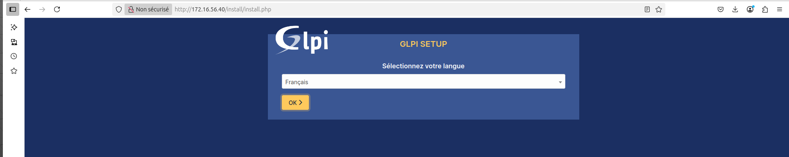
- Sélectionner la langue et cliquer sur Installer.
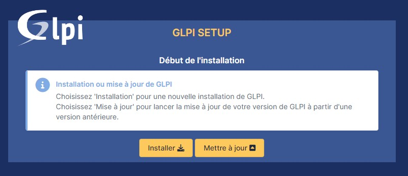
- Vérifier la configuration serveur.
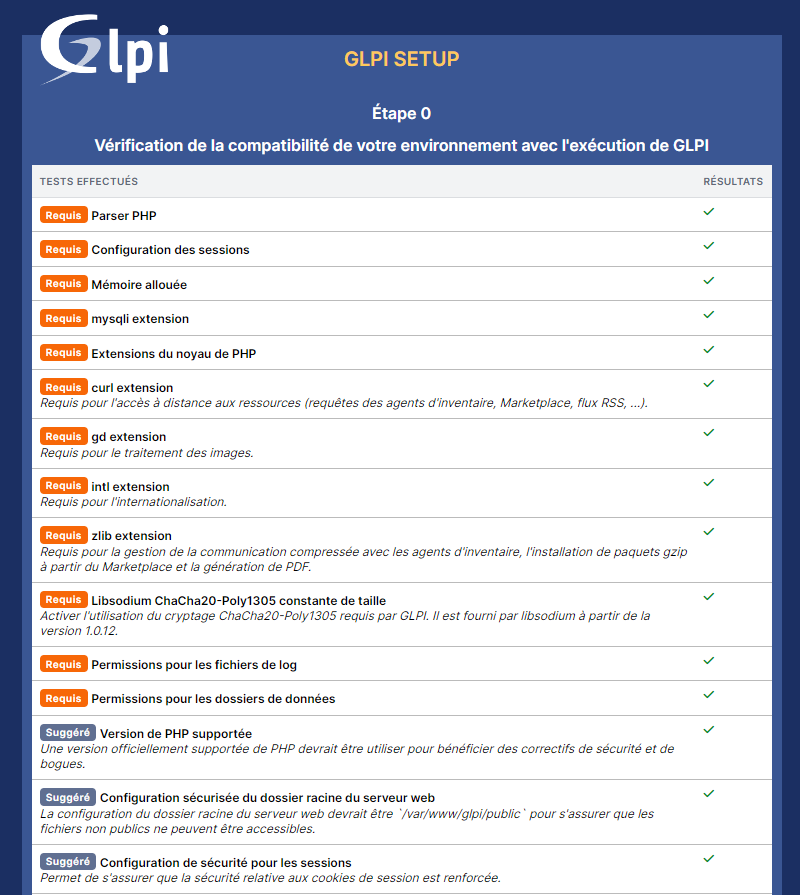
-
Entrer les identifiants SQL :
Serveur : localhost Utilisateur : glpi_admin Mot de passe : etudiant_007 -
Sélectionner la base
db_GLPIEPOKA.
- Terminer l’installation.
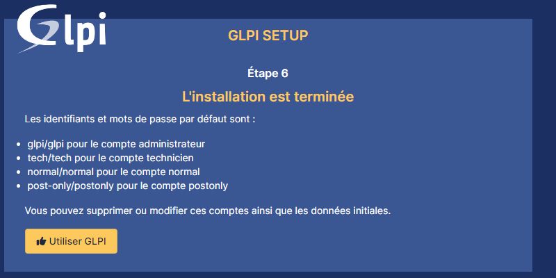
Connexion initiale :
Utilisateur : glpi
Mot de passe : glpi
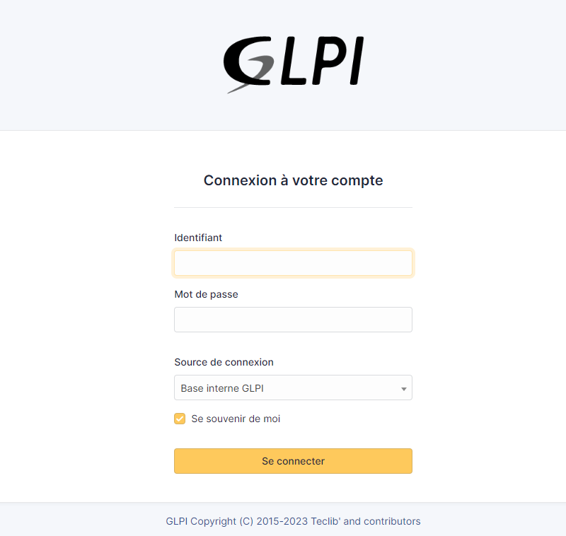
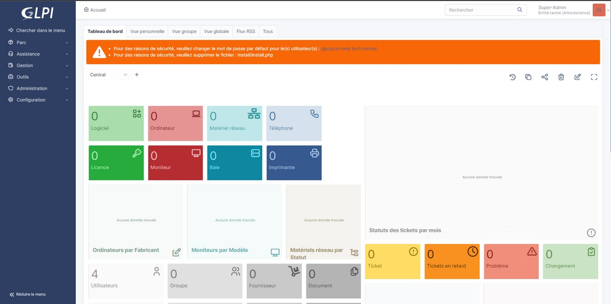
Création des 2 agents sur GLPI¶
- Olivier Tondet – Responsable des solutions techniques d’accès
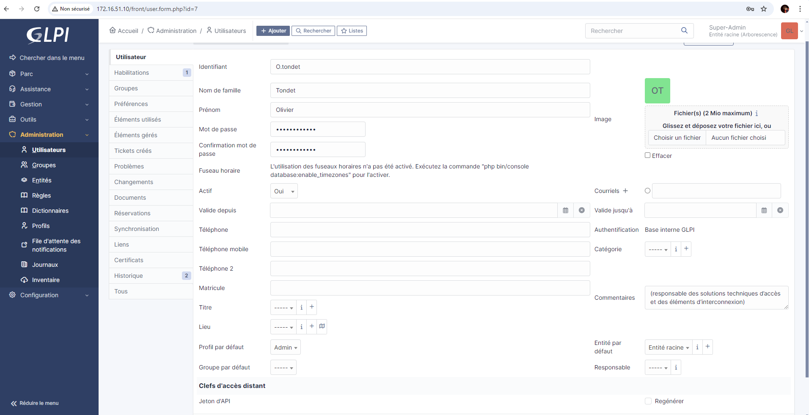
- Pamela Tremo – Responsable des systèmes serveurs
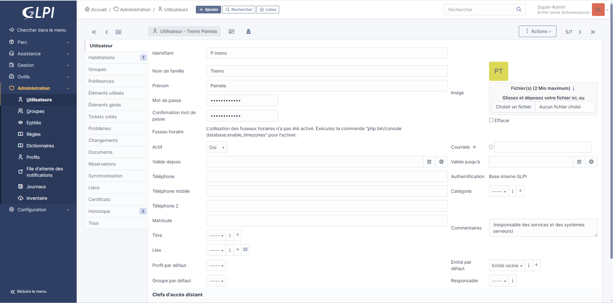¶
Création d’une VM Windows pour les agents¶
Créer deux machines virtuelles Windows pour les agents.
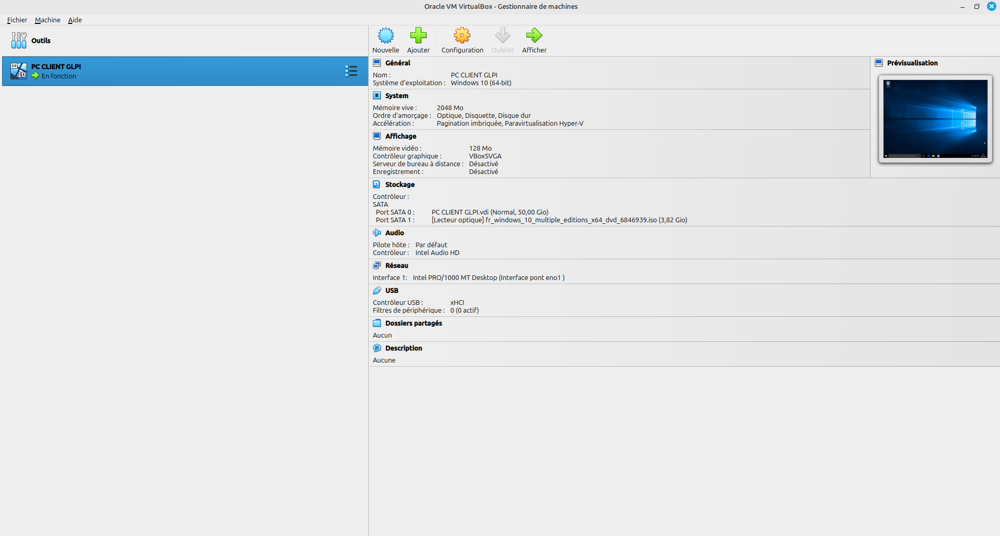
Automatisation de l’inventaire¶
- Télécharger l’agent GLPI 1.10.
-
Pendant l’installation, définir le serveur GLPI :
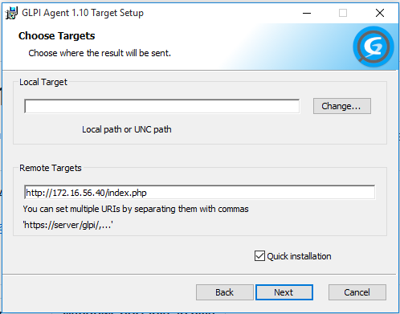http://172.16.56.10/glpi -
Activer l’inventaire :
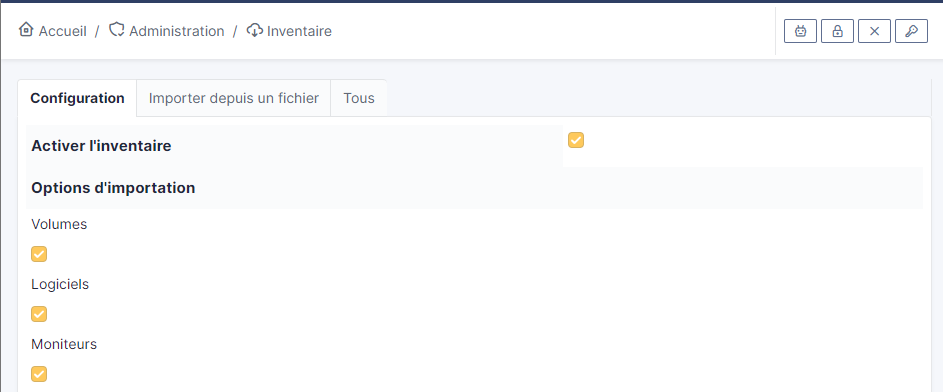Administration → Inventaire -
Forcer un inventaire :
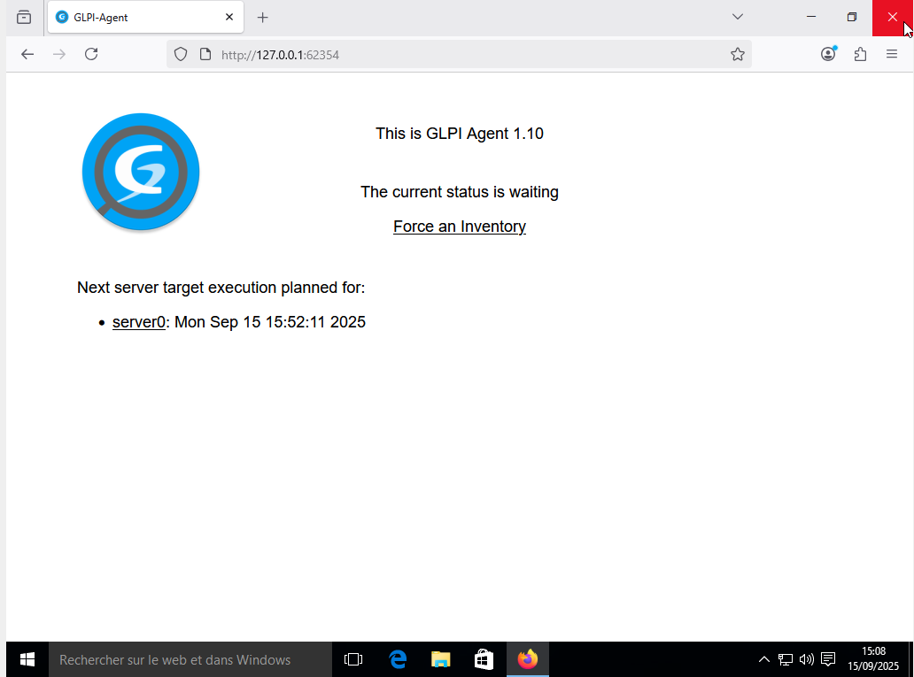http://127.0.0.1:62354 -
Cliquer sur forcer un inventaire et ensuite actualiser le serveur , répéter cette étape jusqu’a ce que ceci apparait :
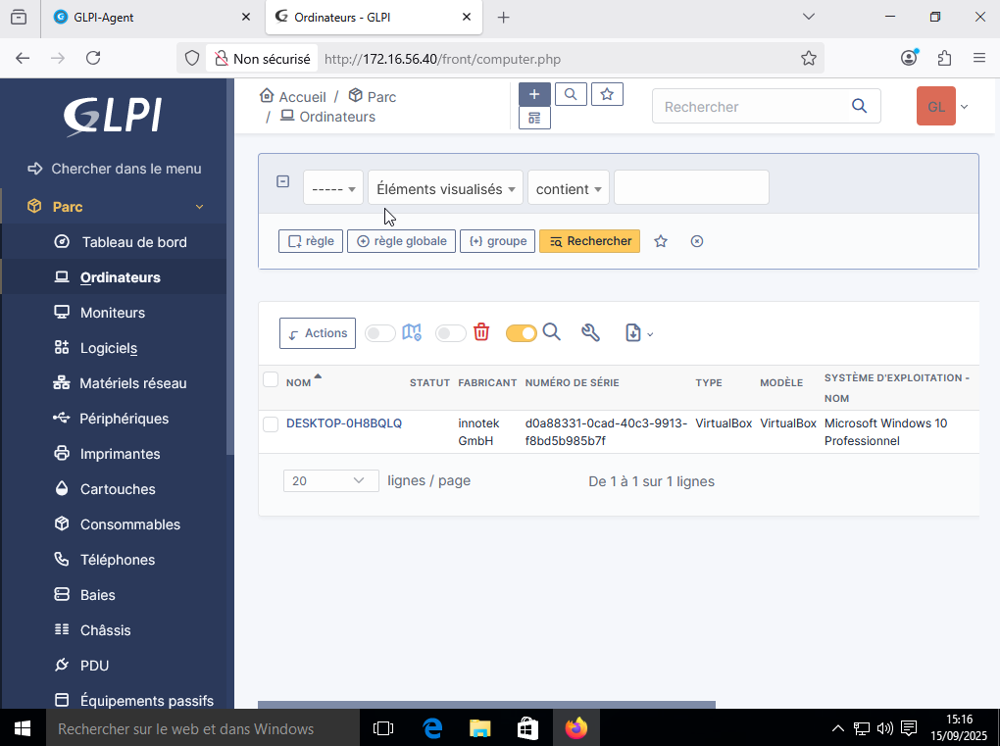